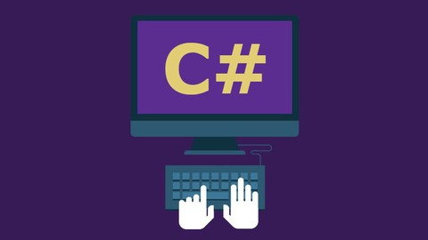

CONTENIDO C

-
C# (en inglés es pronunciado como “C Sharp”, en español como “C Almohadilla”), es un lenguaje de programación
diseñado por la conocida compañía Microsoft. Fue estandarizado en hace un tiempo por la ECMA e ISO dos de las
organizaciones más importantes a la hora de crear estándares para los servicios o productos. El lenguaje de
programación C# está orientado a objetos.
-
Que este lenguaje haya adquirido el nombre de C Sharp viene inspirado por el signo #, este signo se
pronuncia como Sharp en inglés para la notación musical. Es un juego de palabras, puesto que “C#” musicalmente
significaría “do sostenido”, donde el signo # nos indica que una nota es un semitono más alto. Todo eso lo podemos
traducir como una metáfora sobre la superioridad del C# sobre su antecesor, el C++. También el símbolo de sharp
puede hacer una alusión a la unión de cuatro +, siguiendo el sentido de progresión de los lenguajes C.
pagina index